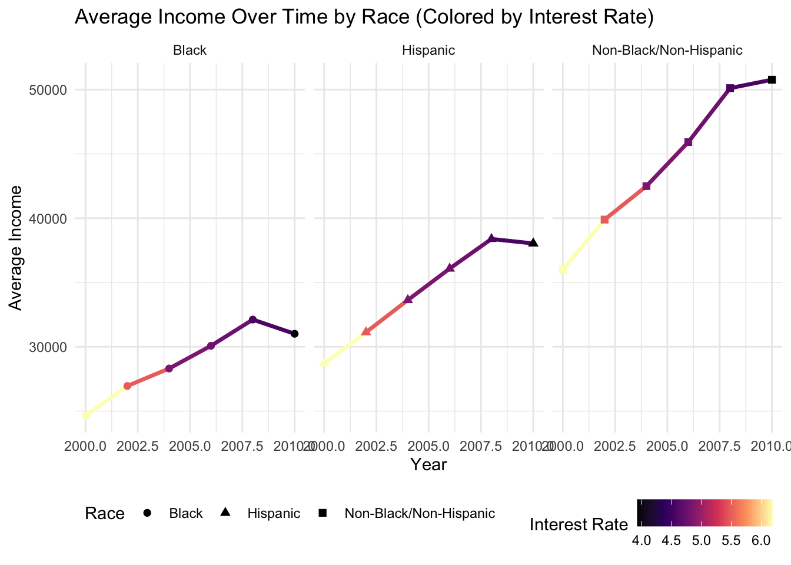
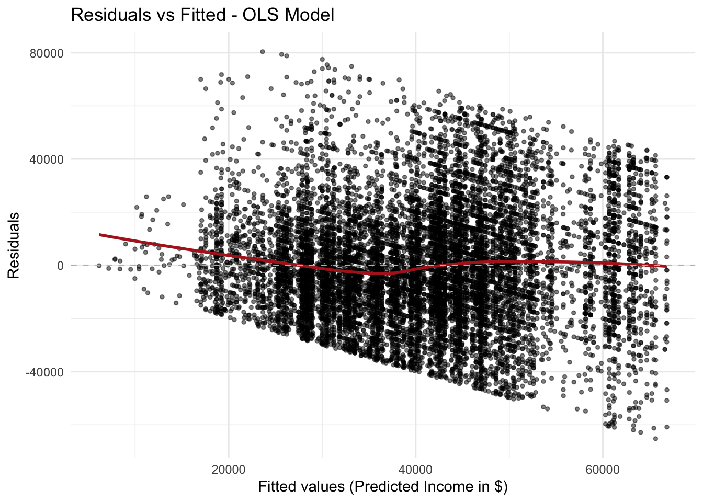

Analysis
Here we provide a detailed analysis using more sophisticated statistics techniques.
Introduction
Objective and Research Questions
The goal of our analysis is to examine how macroeconomic trends in the aftermath of the 2008 recession, such as shifting interest rates, affected different racial and socioeconomic groups in the United States. We aim to answer some of the following general research questions:
- How do income and employment differ across gender, race, and education levels during periods of economic downturn?
- What factors contribute to upward economic mobility?
- Are there persistent racial disparities in long-term wealth accumulation?
To limit the scope of the project, we decided to look at the age cohort of people born between 1957 and 1964, represented by the Bureau of Labor Statistics’ NLS 79 survey, who were working adults at the time of the recession. Looking at this population, some of the following questions for analysis arise:
- What effect did falling interest rates during the recession have on income? Can this relationship be modeled
- Did the recession exacerbate income inequality differently along racial, socioeconomic, regional, or other lines?
Motivating Figures and Tables: Demographic Factors
The following graphs explore some of the relationships between variables in our data to motivate this goal.
This box plot explores the difference in income along gender and racial lines. Across all regions, men appear to make more money than women. However, this effect is particularly pronounced in the South and West regions, where the box plot indicates that a higher proportion of women do not make any income. This higher number of zero-income observations causes some issues for analysis to be accounted for during outlier removal. The graph also highlights the potential difference in effect of income declines across groups.

Motivating Figures and Tables: Interest Rates

Modeling and Inference
First tried with outliers and had bad figures, and we determined there were severe outliers impacting our model.

We therefore used R script like below to remove these and create a new dataset specifically for modeling.
library(tidyverse)
# Load merged dataset
nls_with_rates <- read_csv("dataset/nls_with_rates_full.csv")
# Step 1: Calculate IQR boundaries
Q1 <- quantile(nls_with_rates$Income, 0.25, na.rm = TRUE)
Q3 <- quantile(nls_with_rates$Income, 0.75, na.rm = TRUE)
IQR_value <- Q3 - Q1
lower_bound <- Q1 - 0.24 * IQR_value #lots of 0 (n/a) data
upper_bound <- Q3 + 1.5 * IQR_value
# Step 2: Filter out the outliers
nls_no_outliers <- nls_with_rates %>%
filter(Income >= lower_bound & Income <= upper_bound)
# Step 3: Save it
write_csv(nls_no_outliers, "dataset/nls_no_outliers.csv")After cleaning the data with the script, we began creating our model. After reading the “No Outliers” dataset, we filtered the data by the income years of interest (2006, 2008, and 2010). We also transformed the data by changing the education levels to binned groups (“Less than HS”, “High School”, “Some College”, and “College+” (College+ standing for college graduate or more)) and baseline of “Never Married” for Marital Status. The remaining baselines were determined through alphabetical order automatically through the model (which has been addressed in our conclusions).
After omitting NA values for the bins, we utilized lm to create a linear model, testing covariates of Race, Sex, Marital Status, Age_2010 (Age at Year 2010), Region, edu_bin (education group bins), and avg_LT_rate (average long-term interest rates) and received the following model summary statistics.
| term | Estimate | Std. Error | t value | Pr(>|t|) | Signif. |
|---|---|---|---|---|---|
| (Intercept) | 19662.672 | 5425.858 | 3.624 | 2.91e-04 | *** |
| RaceHispanic | 2807.627 | 669.492 | 4.194 | 2.76e-05 | *** |
| RaceNon-Black/Non-Hispanic | 2993.485 | 508.561 | 5.886 | 4.06e-09 | *** |
| SexMale | 14242.081 | 410.012 | 34.736 | < 2e-16 | *** |
| Marital_StatusDivorced | 4408.501 | 722.159 | 6.105 | 1.06e-09 | *** |
| Marital_StatusMarried | 6627.434 | 627.593 | 10.560 | < 2e-16 | *** |
| Marital_StatusSeparated | -1682.529 | 1146.696 | -1.467 | 1.42e-01 | |
| Marital_StatusWidowed | -677.400 | 1637.284 | -0.414 | 6.79e-01 | |
| Age_2010 | -4.619 | 91.514 | -0.050 | 9.60e-01 | |
| RegionNortheast | 4010.788 | 679.436 | 5.903 | 3.66e-09 | *** |
| RegionSouth | 445.695 | 528.300 | 0.844 | 3.99e-01 | |
| RegionWest | 2824.512 | 647.839 | 4.360 | 1.31e-05 | *** |
| edu_binHigh School | 10851.067 | 1621.460 | 6.692 | 2.30e-11 | *** |
| edu_binSome College | 18365.587 | 1646.517 | 11.154 | < 2e-16 | *** |
| edu_binCollege+ | 29432.746 | 1654.119 | 17.794 | < 2e-16 | *** |
| avg_LT_rate | -2523.204 | 567.790 | -4.444 | 8.91e-06 | *** |
| Residual SE | Degrees of Freedom | R-squared | Adjusted R-squared | F-statistic | P-Value |
|---|---|---|---|---|---|
| 22033 | 11871 | 0.2009 | 0.1999 | 199 | < 2e-16 |
Our model has a r-squared value of 0.2009, indicating that 20.09% of the variance in our model is explained by the model’s covariates. The adjusted r-squared value is slightly lower at 0.1999, meaning our model explains 19.99% of the variance in the model after adjusting for the number of predictors.
The F-statistic of 199 and p-value of <2e-16 (extremely close to 0) confirms that the overall model is statistically significant; Atleast some of the covariates in the model explain our response variable
Income. OnlyAge_2010andRegionSouthfail to have a significant effect in explainingIncome. The residual standard error of 22033 (roughly0.5418of mean income) indicates substantial noise exists in our model.
Based on the metrics we observed, we observed our model’s diagnostic plots in the form of a residual vs. fitted plot and a Q-Q normality plot.

- The residual vs. fitted values for our model reveals funneling, indicating moderate levels of heteroscedasticity that could bias the standard errors for our coefficients. This could distort our t-test statistics and p-values and undermining the actual significance of covariates in the model.
Analyzing our normal Q-Q plot, most points follow along the dashed diagonal line very well; most residuals are approximately normally distributed.
On the ends, several points stray away, reflecting a few extreme (under and over) predictions and heavier tails than a normal Gaussian distribution. These results are expected as we only trimmed the most extreme outliers and because of the nature of our data (most people cluster around the middle of the distribution, but a few people earn very little while a few earn very large sums – disparity in income distribution).
Another consideration we made was to check for multicollinearity (for the precision of our coefficient estimates) by computing predictor-level GVIF values adjusted with degrees of freedom. All values fell below 1.5, with most covariates having GVIF values close to 1. No interaction terms were needed in our model, and our r-squared and adjusted r-squared values are not inflated by correlated predictors.
| Predictor | GVIF | Df | GVIF^(1/(2*Df)) |
|---|---|---|---|
| Race | 1.338842 | 2 | 1.075678 |
| Sex | 1.028136 | 1 | 1.013970 |
| Marital_Status | 1.104040 | 4 | 1.012449 |
| Age_2010 | 1.004665 | 1 | 1.002330 |
| Region | 1.234429 | 3 | 1.035725 |
| edu_bin | 1.068939 | 3 | 1.011173 |
| avg_LT_rate | 1.000200 | 1 | 1.000100 |
After checking diagnostics and GVIFs:
- Moderate heteroscedasticity existed (seen in residual vs. fitted plot).
- Residuals in our Q-Q plot were roughly normal.
- Relatively no multicollinearity based on the GVIFs.
Our next logical step was to experiment with stabilizing the variance through transformations of our outcome.
We fitted various transformations, included four common ones (boxcox - lambda = 0.6, square root, logarithm, reciprocal), and compared their residual standard errors for further analysis.
| Transformation | Residual SE |
|---|---|
| sqrt(Income) | 59 |
| log(Income + 1) | 1 |
| 1 / Income | 0 |
| BC(λ=0.6) | 332 |
For the
sqrt()transformation, the residual SE was 59square root dollar units, showing some variance stabilization but not intuitive on this scale.For the
log()transformation, the residual SE was 1log dollar unit, translating to multiplicative errors of~2.7xin our residual calculations.For the
1/Incomereciprocal transformation, the residual SE was 0. The transformation collapsed all the variation towards 0 but over compressed to the point of breaking interpretability of the coefficients.For the
boxcoxtransformation, the residual SE was 332 (on lambda value of 0.6), comparable to the sqrt() transform (lambda value 0.5) but non-intuitive on a different scale.
Further analysis into the residual vs. fitted plots for all the transformations revealed that none of these transformations corrected for heteroscedasticity, with all showing funneling (and therefore we have omitted the plots for brevity).
Instead of using these transformations, we decided to keep Income on its original scale and correct for valid inference by using robust standard errors through coeftest() for unbiased point estimates and accurate standard errors, t-stat values, and p-values under heteroscedasticity
| term | Estimate | Std. Error | t value | Pr(>|t|) | Signif |
|---|---|---|---|---|---|
| (Intercept) | 19662.672 | 5286.113 | 3.720 | 2.00e-04 | *** |
| RaceHispanic | 2807.627 | 654.545 | 4.289 | 1.81e-05 | *** |
| RaceNon-Black/Non-Hispanic | 2993.485 | 501.590 | 5.968 | 2.47e-09 | *** |
| SexMale | 14242.081 | 410.099 | 34.728 | < 2e-16 | *** |
| Marital_StatusDivorced | 4408.501 | 713.909 | 6.175 | 6.83e-10 | *** |
| Marital_StatusMarried | 6627.434 | 611.675 | 10.835 | < 2e-16 | *** |
| Marital_StatusSeparated | -1682.529 | 1099.353 | -1.530 | 1.26e-01 | |
| Marital_StatusWidowed | -677.400 | 1486.064 | -0.456 | 6.49e-01 | |
| Age_2010 | -4.619 | 92.115 | -0.050 | 9.60e-01 | |
| RegionNortheast | 4010.788 | 702.725 | 5.707 | 1.17e-08 | *** |
| RegionSouth | 445.695 | 516.859 | 0.862 | 3.89e-01 | |
| RegionWest | 2824.512 | 670.018 | 4.216 | 2.51e-05 | *** |
| edu_binHigh School | 10851.067 | 1120.241 | 9.686 | < 2e-16 | *** |
| edu_binSome College | 18365.587 | 1159.706 | 15.836 | < 2e-16 | *** |
| edu_binCollege+ | 29432.746 | 1190.501 | 24.723 | < 2e-16 | *** |
| avg_LT_rate | -2523.204 | 574.428 | -4.393 | 1.13e-05 | *** |
After applying robust inference with coeftest(), our standard errors, t-values, and p-values were adjusted. Coefficients for predictors remained the same. We clustered by Case_ID to check for between-person correlation, but this did not differ from the original HC1 coeftest() and did not alter conclusions, so we only reported the original results. While there were no changes to significant terms, the p-value for average long-term interest rates lowered further.
With valid inferences now, the last part we decided to test was the use of stepwise AIC/BIC regression for variable selection.
| Criterion | Formula |
|---|---|
| AIC | Income ~ Race + Sex + Marital_Status + Region + edu_bin + avg_LT_rate |
| BIC | Income ~ edu_bin + Sex + Marital_Status + Region + Race + avg_LT_rate |
Both AIC and BIC criterion based selections show the same models, omitting Age_2010, aligning with the *** significance markers in our coefficient tests. While specific levels in variables (RegionSouth, Marital_StatusSeparated, etc) are not considered significant, the overall variables they belong to are significant as other levels have an effect. These stepwise regression results need to be considered with caution as heteroscedasticity violates the penalties enacted by AIC and BIC. More principled selection methods can be explored, but these are out of our scope.
Conclusion
Based on our diagnostics and overall checks, the following is our OLS model on the untransformed Income scale:
\[ \mathrm{Income}_i \;=\; \beta_0 + \beta_{\text{Race}} + \beta_{\text{Sex}} + \beta_{\text{Marital}} + \beta_{\text{Region}} + \beta_{\text{Edu}} + \beta_{\text{LT Rate}} + \varepsilon_i \]
Our pooled-OLS model (pooling 2006, 2008, and 2010 while retaining only long-term average interest rates) with HC1-Robust SEs (checked for person-clustered SEs) provided us with the following key takeaways:
Education and Gender remain the most dominant effects on Income: - With all other predictors held constant, males earned on average ~$14,242 more per year than females regardless of the year.
Averaging across 2006-2010, college graduates earned nearly
~$30000more than those who did not attend high school (“Less than HS” is part of the base estimate as an indicator variable). The gap is of a similar magnitude in each year, which suggests that a college education was stable even during the 2008 downturn.Each successive education category translated to about
$7000-$11000in additional annual earnings, a pattern stable across 2006-2010.
Race, Marriage, and Region have strong secondary effects: - Individuals identifying as Non-Black/Non-Hispanic and Hispanic earned nearly $2993 and $2807 more than those identifying as Black / African-American (baseline), potentially indicative of Black / African-American individuals being disproportionately affected with relation to earnings.
Married individuals earned
$6627more than those who never married (baseline). Divorced individuals earned$4408more, while separated and widowed individuals earned$1682and$677less, respectively. Marriage might have had an economical advantage (potentially dual incomes, shared expenses, financial support from spouse).Compared to those living in the central United States (baseline), residents in the Northeast earned
~$4010more, and residents living in the West earned~2824more. The South had a modest increase in earnings of~$445. These differences may reflect economic opportunities, urbanization, and higher costs of living.
Macroeconomic conditions have an impact:
By omitting factor levels for each year, the long-term interest rates are isolated and show the marginal cyclical effect of the rates, not conflated with other effects embedded in the model and intercept (ex: wage growth, recessionary gaps, stimulus programs).
- A one-percent point rise in the average long-term interest rate is associated with a
$2523reduction in income on average across the three years, even after pooling across the recessionary dip in 2008.
This reduction does not account for total shock in 2008, rather reflecting on the credit-cost sensitivity, explaining the average difference in income due to the change in borrowing costs with all other predictors fixed.